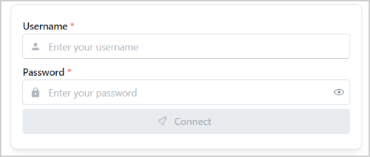
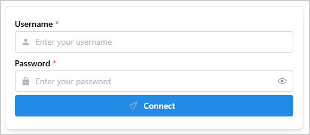
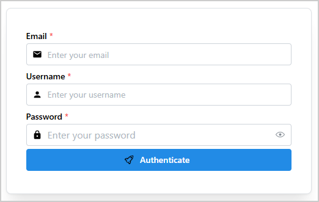

Authenticator#
Authenticator is a Dash All-in-One (AIO) component for creating authentication forms. It
supports both a default configuration and a fully customizable form with user-defined fields.
Key features:
Default mode: Pre-configured form with a username field, a password field, and a connect button.
Custom mode: Fully customizable form items with user-defined fields and types.
Callback integration: Component IDs are accessible for implementing custom business logic such as enabling or disabling the connect button based on input.
{kind=link}

Usage#
Basic usage#
Import Authenticator:
from ansys.solutions.dash_super_components import Authenticator
Add an Authenticator component to your page layout:
def layout():
return html.Div(
[
html.Div(
Authenticator(aio_id="default_authenticator_form"),
style={
"display": "flex",
"justifyContent": "center",
"alignItems": "center",
},
)
]
)
The following output is expected:
{kind=link}

By default, the Authenticator component comes with three items:
Username field
Password field
Connect button
Advanced usage#
In most cases, the authentication form needs to be customized to fit the business needs.
Authenticator enables for a full customization of the form.
Import Authenticator, IconNames, and create_base64_svg_src:
from ansys.solutions.dash_super_components import Authenticator
from ansys.solutions.dash_super_components.utils.svg_icons import IconNames, create_base64_svg_src
Note
The create_base64_svg_src() utility produces offline-compatible icons. For information
about the available icon options and their advantages, see Icons.
In the layout function of the page, define the structure of the authentication form and add the
Authenticator component:
def advanced_layout():
authentification_form_items = [
{
"type": "TextInput",
"id": "email",
"properties": {
"label": "Email",
"placeholder": "Enter your email",
"required": True,
"leftSection": create_icon_span(
IconNames.IC_EMAIL, size_px=16, color="var(--mantine-color-text)"
),
},
},
{
"type": "TextInput",
"id": "username",
"properties": {
"label": "Username",
"placeholder": "Enter your username",
"required": True,
"leftSection": create_icon_span(
IconNames.MDI_USER, size_px=16, color="var(--mantine-color-text)"
),
},
},
{
"type": "PasswordInput",
"id": "password",
"properties": {
"label": "Password",
"placeholder": "Enter your password",
"required": True,
"leftSection": create_icon_span(
IconNames.MDI_SECURE, size_px=16, color="var(--mantine-color-text)"
),
},
},
{
"type": "Button",
"id": "authenticate",
"properties": {
"children": "Authenticate",
"leftSection": create_icon_span(
IconNames.HUGE_ROCKET, size_px=16, color="var(--mantine-color-text)"
),
},
},
]
return html.Div(
[
html.Div(
Authenticator(
aio_id="custom_authenticator_form",
items=authentification_form_items,
card_props={
"shadow": "xl",
"padding": "xl",
},
),
style={
"display": "flex",
"justifyContent": "center",
"alignItems": "center",
},
)
]
)
Each item of the authentication_form_items list defines a field in the authentication form.
You can add as many fields as necessary.
This table lists the authorized keys for the
item definition.
The following output is expected:
{kind=link}

Properties#
Custom form item keys#
Key |
Description |
Type |
Required |
|---|---|---|---|
id |
A unique identifier of the item. |
string |
Yes |
type |
The input type: “TextInput”, “PasswordInput” or “Button”. |
string |
Yes |
properties |
The properties of the item. See dmc.TextInput, dmc.PasswordInput and dmc.Button properties. |
dict |
Yes |
Constructor parameters#
Name |
Description |
Type |
Required |
|---|---|---|---|
items |
The list of items to render in the authentication form. |
list |
No |
card_props |
The properties of the card component of the authentication form. |
dict |
No |
aio_id |
The unique identifier of the component. If not provided, a UUID is generated. |
string |
No |
Component IDs#
The component exposes the following IDs for use in callbacks:
Authenticator.ids.input(aio_id, item_id): ATextInputitemAuthenticator.ids.password(aio_id, item_id): APasswordInputitemAuthenticator.ids.button(aio_id, item_id): AButtonitem
The IDs are indexed by the aio_id of the component and the item id (item["id"]).
For the default configuration (no items list provided), the default item IDs are:
Authenticator.ids.input(aio_id, "username"): The username text input componentAuthenticator.ids.password(aio_id, "password"): The password input componentAuthenticator.ids.button(aio_id, "connect"): The connect button component
Full example#
Check out this example
to learn how to use Authenticator.
The example demonstrates:
A default authentication form with username, password, and a connect button
A custom authentication form with email, username, and password fields decorated with left-section icons, plus a custom authenticate button
A status badge that updates on form submission
Enabling or disabling the submit button based on whether all required fields are filled
For a minimal self-contained runnable example, see the Authenticator page in the Examples gallery.
Source code#
For the full API reference of Authenticator, see
Authenticator.
Check out the component source code to discover the underlying logic. Contributions are welcomed. You can extend the component functionalities by raising a pull request in the dash-super-components package.